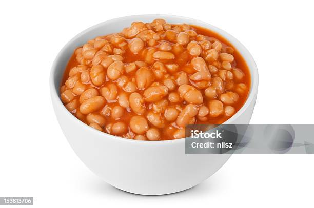

Beans in a bowl

Description
This is a simple recipe coined by the one and only Deborah Baker
- Branston Baked Beans
- Marmite or gluten free alternative
- Cubed mature cheddar cheese
Steps
- Heat branston beans in microwave for 1 minute 30 seconds
- Stir in marmite to taste
- Add the cubes of cheese
- Microwave for another minute
- And serve